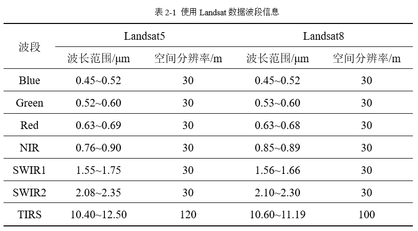

| 数据来源 | 研究数据来自于地理空间数据云（https://www.gscloud.cn/）所提供的Landsat5 TM以及Landsat8 OLI数据。受研究区范围内影像云量条件的制约，故研究时间尽量选择在2000-2020年的8-11月以获得较高质量的影像供后续处理使用。 |
| 数据预处理 | 基于PIE-Basic软件将获取到的数据分别按照Landsat系列数据处理方式进行波段合成（Landsat5数据波段合成顺序为b1、b2、b3、b4、b5、b7，Landsat8数据波段合成顺序为b1、b2、b3、b4、b5、b6、b7），再进行辐射定标和大气校正操作降低大气等外部因素对影像的影响。对于热红外波段则需要单独进行辐射定标操作。 |